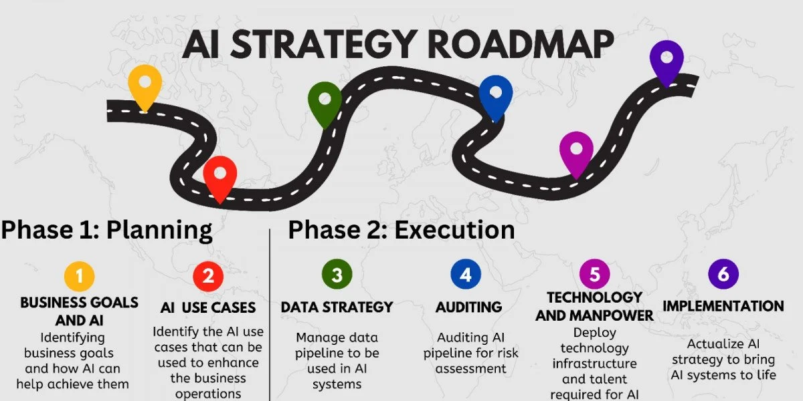

AI BUSINESS STRATEGIES
Artificial Intelligence (AI) has become a cornerstone in shaping modern business strategies, offering innovative solutions to enhance efficiency and competitiveness. Here are key points outlining AI business strategies:
1.Data-Driven Decision Making:
Utilize AI to process vast amounts of data quickly and accurately, enabling informed decision-making. Businesses can gain valuable insights from customer behavior, market trends, and operational metrics.
2.Personalization and Customer Experience:
Implement AI-driven personalization to enhance customer experiences. Tailor products, services, and interactions based on individual preferences, increasing customer satisfaction and loyalty.

3.Automation for Efficiency:
Integrate AI-powered automation to streamline business processes. Tasks like data entry, customer support, and routine operations can be automated, allowing employees to focus on higher-value activities.
4.Predictive Analytics for Forecasting:
Leverage predictive analytics powered by AI algorithms to anticipate market trends, demand fluctuations, and other variables. This enables proactive planning and resource allocation.
5.Supply Chain Optimization:
Apply AI to optimize supply chain logistics. Predictive analytics, demand forecasting, and real-time monitoring can improve inventory management, reduce costs, and enhance overall efficiency.
6.AI in Marketing and Sales:
Implement AI-driven marketing strategies, such as personalized recommendations, targeted advertising, and lead scoring. AI can analyze customer behavior to optimize marketing campaigns and sales processes.
7.Cybersecurity Enhancement:
Use AI for advanced cybersecurity measures. Machine learning algorithms can detect and respond to security threats in real-time, protecting sensitive data and ensuring the integrity of business operations.
8.Collaborative AI and Human Workforce:
Foster a collaborative environment between AI and human workers. AI can handle repetitive tasks, while humans focus on creative thinking, problem-solving, and tasks that require emotional intelligence.
9.Continuous Learning and Adaptability:
Implement AI systems that can continuously learn and adapt to evolving business environments. This ensures that the technology remains relevant and effective in addressing emerging challenges.
10.Ethical AI Practices:
Prioritize ethical considerations in AI deployment. Ensuring transparency, fairness, and accountability in AI applications helps build trust with customers, employees, and other stakeholders.
Incorporating these AI business strategies can empower organizations to stay competitive, innovate, and navigate the dynamic landscape of the digital era.